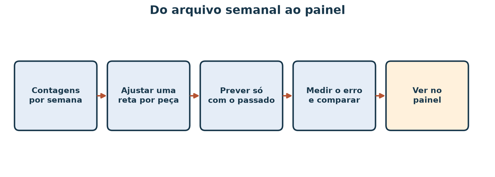
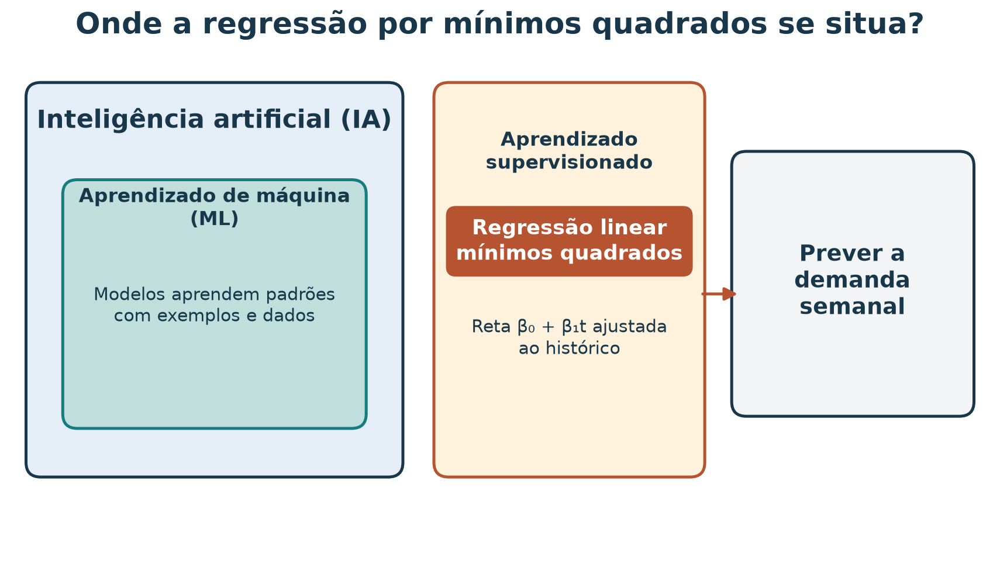
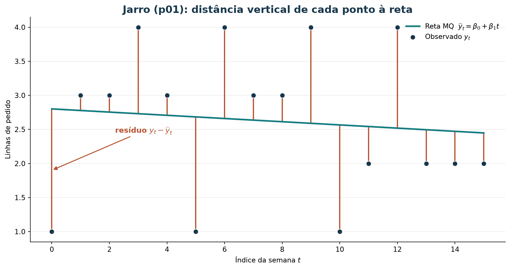
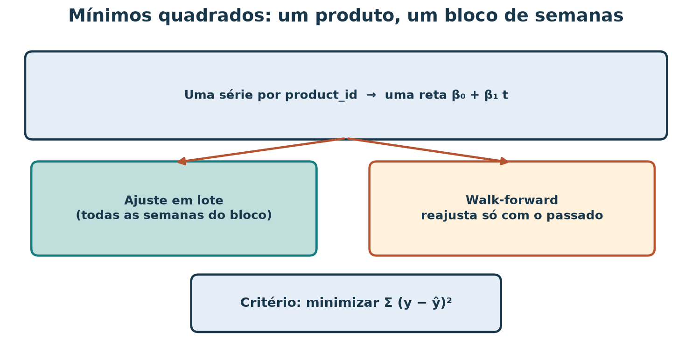
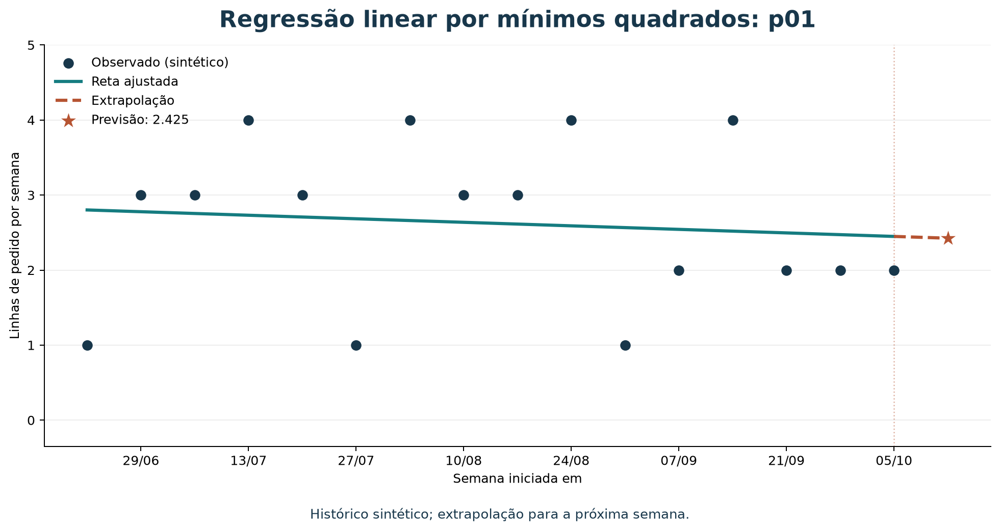
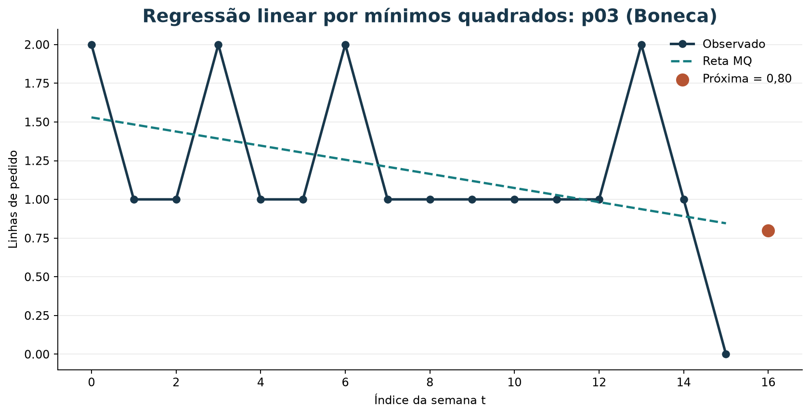
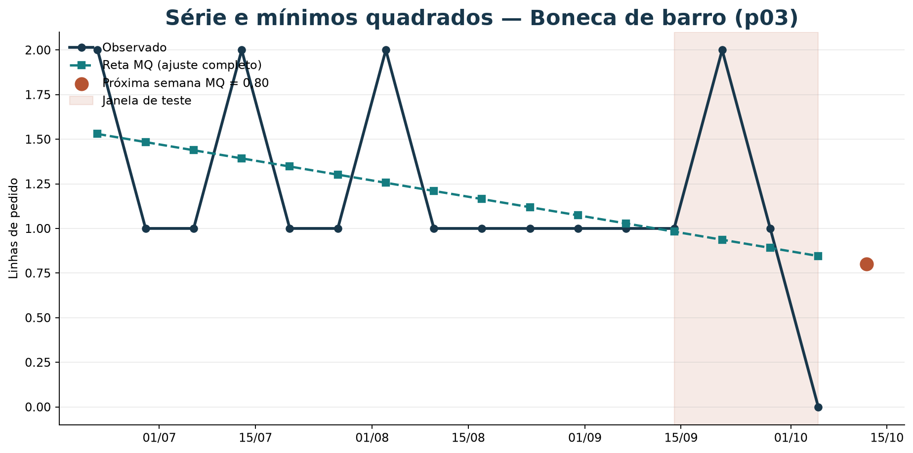
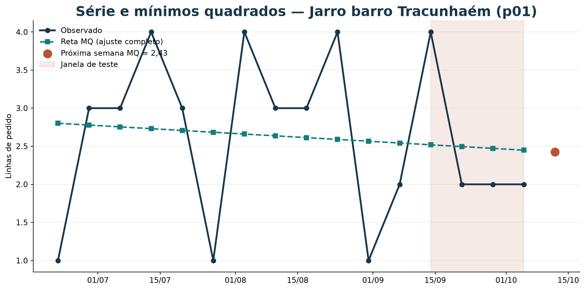
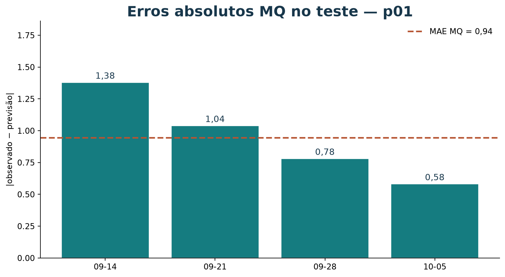
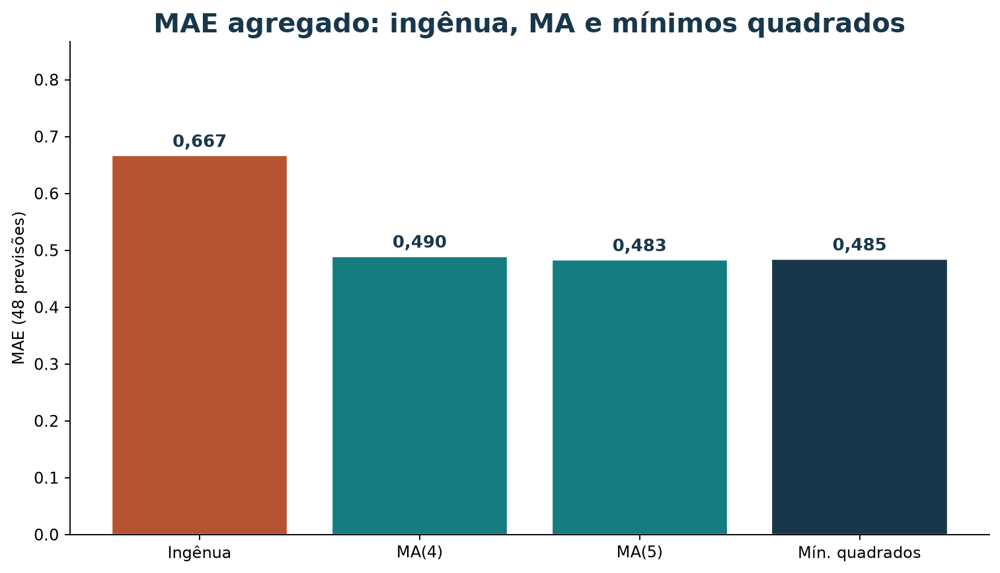

Previsão de demanda com regressão por mínimos quadrados
Versão
web com explorador. Explorador no repositório: bi-demanda-mq/index.html.
Experimente a reta neste tutorial
Escolha produto e método abaixo. Compare mínimos quadrados com média móvel e com a previsão ingênua. As 16 semanas são sintéticas.
Ao concluir este tutorial, você deverá conseguir situar a regressão
linear na história da medida e do aprendizado com dados, ajustar uma
reta por mínimos quadrados à série semanal de um
produto, extrapolar a semana seguinte com piso em zero quando preciso, e
comparar o método com médias móveis e uma previsão ingênua no mesmo
ritual de treinar só com o passado da média móvel.
Os dados são sintéticos: as 16 semanas distribuem os totais do catálogo e não são vendas observadas. Resultados numéricos servem para reproduzir o método, não para afirmar que existe tendência real.
Leitura em ritmo próprio: acompanhe os dois exemplos trabalhados
(Jarro p01 e Boneca p03) e o explorador BI
quando quiser ver a mesma reta no painel.
1. A pergunta da loja no tempo
A loja fecha a semana e já pensa na seguinte: quantas linhas
de pedido cada peça tende a gerar? A unidade é a mesma da média
móvel — contagens por produto por semana em dados/vendas_semanais.csv.
Na média móvel, a previsão é a média das últimas (N) observações: a regra vem pronta; o que se aprende, quando se aprende, é sobretudo qual (N) medir. Aqui a pergunta muda de forma: em vez de uma média local, pedimos uma reta que resuma a relação entre o índice da semana (t) e a contagem (y_t), e usamos essa reta para olhar um passo à frente.
O protocolo de avaliação continua temporal: treinar só com o passado, prever a próxima semana, só então incorporar o valor observado. O que muda é o modelo dentro desse ritual.

Figura 0 — Caminho desta aula: ler as contagens, ajustar uma reta por peça, prever a semana seguinte só com o que já fechou, medir o erro frente a outros métodos e conferir os mesmos números no painel.
2. Da medida à previsão aprendida
A reta por mínimos quadrados chegou à demanda semanal depois de atravessar séculos de medida, estatística e, mais tarde, aprendizado de máquina. O caminho curto abaixo basta para saber de onde veio a soma dos quadrados antes de digitá-la.
2.1 Mínimos quadrados no século XIX
No início do século XIX, astrônomos e geodesistas precisavam combinar muitas observações imperfeitas numa única curva ou posição. Adrien-Marie Legendre (1805) e Carl Friedrich Gauss (com trabalhos que se entrelaçam nessa época) formulariam o critério que ainda usamos: escolher os parâmetros que minimizam a soma dos quadrados dos resíduos — a diferença entre o medido e o previsto pelo modelo.
A escolha do quadrado não é cosmética. Erros grandes pesam mais que erros pequenos; erros de sinais opostos deixam de se anular na soma. A mesma ideia de perda (L_2) aparece no tutorial da média móvel quando se fala do preço do erro; aqui ela vira o critério de ajuste da reta.
2.2 “Regressão” como nome e gesto
Décadas depois, a estatística anglo-saxônica popularizou a palavra regressão no estudo de relações entre variáveis medidas — o gesto de descrever como uma grandeza acompanha outra. O nome ficou; o núcleo operativo deste tutorial é mais estreito e mais antigo: ajustar uma família simples de funções (aqui, retas) aos pares ((t, y_t)) pelo critério dos mínimos quadrados.
Na loja, a “outra variável” é o tempo discreto da semana. A demanda observada é o alvo. A reta é o resumo linear desse histórico sintético.
2.3 Entrada no aprendizado supervisionado
Inteligência artificial (IA) é o campo amplo de sistemas que apoiam ou automatizam tarefas como perceber, prever e decidir. Aprendizado de máquina (ML) é a família de métodos em que o comportamento do sistema depende de dados — parâmetros ou estruturas ajustados a exemplos.
Quando cada exemplo traz uma entrada e um alvo conhecido, falamos de aprendizado supervisionado. Nesta aula:
| Peça | Papel |
|---|---|
| Entrada | índice da semana (t) (e, se quiser, um vetor que a represente) |
| Alvo | contagem observada (y_t) |
| Modelo | reta (\widehat{y}_t = \beta_0 + \beta_1 t) |
| Aprendizado | escolher (\beta_0,\beta_1) pelos mínimos quadrados nos exemplos |
A regressão linear é uma técnica estatística clássica; vira modelo de ML no sentido operacional de parâmetros estimados a partir dos dados e depois usados para prever.
2.4 Mapa deste tutorial

Figura 1 — A regressão linear liga exemplos de entrada e alvo a uma função ajustada. As relações são conceituais, não uma medida de tamanho das áreas.
Leia de fora para dentro: a loja formula uma previsão; o ML oferece o ritual de ajustar parâmetros a exemplos; os mínimos quadrados escolhem a reta. A unidade permanece linhas de pedido por produto por semana. O arquivo sintético continua sintético.
3. O que significa “mínimos quadrados”
A reta que resume as semanas
Para um produto, cada semana traz um ponto: no eixo horizontal o
índice t (0, 1, 2, …); no vertical, a contagem observada
y_t em linhas de pedido. Os pontos raramente se alinham
como um colar perfeito. Ainda assim, a loja pode pedir um resumo
reto — uma única reta que acompanhe o histórico e sirva para
olhar um passo à frente.
Essa reta escreve-se
β₀é o intercepto: valor ajustado quandot = 0.β₁é a inclinação: variação média ajustada em linhas de pedido por semana.ŷ_té a previsão do modelo para a semanat.
Resíduo: o que a reta errou
Em cada semana, compare o que a loja contou com o que a reta disse. A diferença
é o resíduo: positivo se a reta ficou abaixo do observado, negativo se ficou acima. A unidade continua sendo linhas de pedido por produto por semana.
No gráfico, cada segmento terracota é essa distância vertical — do ponto observado até a reta, na mesma semana (t). Mínimos quadrados escolhe a reta que deixa a soma desses segmentos (ao quadrado) a menor possível.

Figura 2 — Cada haste liga (y_t) a (\widehat{y}_t) na semana (t).
A reta verde é o ajuste em lote de Jarro (p01); o critério
soma o quadrado dessas distâncias.
Por que elevar ao quadrado
Somar resíduos crus misturaria acertos para cima e para baixo até quase se anularem. Elevar cada resíduo ao quadrado faz duas coisas úteis ao mesmo tempo: erros grandes pesam mais que erros pequenos, e sinais opostos deixam de se cancelar na soma. É o mesmo espírito de Legendre e Gauss — e o mesmo espírito de perda (L_2) que aparece no tutorial da média móvel — agora como critério de escolha da reta.
O critério em uma linha
Mínimos quadrados escolhe o par ((\beta_0, \beta_1)) que minimiza a soma dos resíduos ao quadrado, com a semana no eixo horizontal:
Depois de prever: o piso em zero
O ajuste é uma aproximação linear cuja utilidade se examina em semanas futuras reservadas para teste. Uma reta pode ainda produzir previsões negativas, embora contagens não possam ser negativas. Neste tutorial, aplicamos um limite inferior de zero após prever: decisão prática de pós-processamento, distinta do critério de mínimos quadrados em si.

Figura 3 — Cada product_id tem a própria reta. O
critério Σ(y−ŷ)² é o mesmo; o que muda entre “ajuste completo” e
walk-forward é quais semanas entram no lote.
4. Exemplo trabalhado 1 —
Jarro (p01)
O arquivo tem 16 semanas, de 2026-06-22 a 2026-10-05, para 12
produtos. A coluna order_line_count conta linhas de pedido
semanais, não unidades físicas. O script de validação verifica que todas
as combinações produto/semana estão presentes e que os totais
reconciliam:
uv run python scripts/validar_vendas_semanais.pyO código abaixo organiza a tabela com pandas e ajusta a reta com
LinearRegression do scikit-learn. Na raiz do
repositório:
uv run --with pandas --with scikit-learn pythonfrom pathlib import Path
import numpy as np
import pandas as pd
from sklearn.linear_model import LinearRegression
# Tabela longa → matriz semana × produto
vendas = pd.read_csv(
Path("dados/vendas_semanais.csv"),
parse_dates=["week_start"],
)
matriz = vendas.pivot(
index="week_start",
columns="product_id",
values="order_line_count",
).sort_index()
# Exemplo 1: Jarro barro Tracunhaém
produto = "p01"
serie = matriz[produto]
# t = 0, 1, …, 15 (índice da semana no CSV)
semanas = np.arange(len(serie)).reshape(-1, 1)
alvos = serie.to_numpy()
# Ajuste em lote: uma reta para todo o histórico deste produto
modelo = LinearRegression().fit(semanas, alvos)
# Extrapolação um passo à frente (t = 16)
semana_seguinte = np.array([[len(serie)]])
previsao_bruta = float(modelo.predict(semana_seguinte)[0])
previsao = max(0.0, previsao_bruta) # piso prático para contagem
print(f"Intercepto: {modelo.intercept_:.4f}")
print(f"Inclinação: {modelo.coef_[0]:.4f} linhas/semana")
print(f"Previsão bruta: {previsao_bruta:.4f}")
print(f"Previsão não negativa: {previsao:.4f}")Para Jarro (p01), o ajuste com as 16 semanas resulta
em:
A inclinação ajustada é aproximadamente −0,024 linha por
semana. Ao extrapolar para t = 16, a previsão é
2,425 linhas de pedido. A pequena inclinação negativa
descreve a reta que melhor ajusta esta amostra sintética; não demonstra
uma queda real de demanda.

Figura 4 — A reta resume a tendência linear ajustada ao histórico
de p01. O segmento futuro é uma extrapolação, não um valor
observado.
Previsões para todos os produtos
O mesmo ajuste, feito separadamente para cada produto, produz as previsões:
| Produto | Intercepto | Inclinação por semana | Previsão bruta | Após limite em zero |
|---|---|---|---|---|
Jarro barro Tracunhaém (p01) |
2,801 | −0,024 | 2,425 | 2,425 |
Prato esmaltado Tracunhaém (p02) |
1,904 | −0,021 | 1,575 | 1,575 |
Boneca de barro (p03) |
1,529 | −0,046 | 0,800 | 0,800 |
Rendeira Alto do Moura (p04) |
2,485 | −0,040 | 1,850 | 1,850 |
Toalha de renda (p05) |
1,640 | −0,035 | 1,075 | 1,075 |
Caminho de mesa renda (p06) |
0,897 | −0,028 | 0,450 | 0,450 |
Xilogravura Pilar (p07) |
2,213 | −0,037 | 1,625 | 1,625 |
Cordel ilustrado (p08) |
1,007 | 0,007 | 1,125 | 1,125 |
Quadro xilo colorido (p09) |
0,926 | −0,049 | 0,150 | 0,150 |
Cesto de palha (p10) |
1,875 | −0,050 | 1,075 | 1,075 |
Bolsa de palha (p11) |
0,963 | −0,012 | 0,775 | 0,775 |
Sousplat de palha (p12) |
1,029 | −0,071 | −0,100 | 0,000 |
Para p12, a reta prevê −0,1. Usar zero evita apresentar
uma contagem negativa, mas não garante uma distribuição válida nem
corrige o modelo. Com alvos de contagem, considere um modelo cuja saída
respeite a escala e o domínio do problema; também registre sempre
qualquer pós-processamento.
5. Exemplo trabalhado 2 —
Boneca (p03)
Repita o mesmo ritual com Boneca de barro (p03): troque
produto = "p03" no bloco anterior (ou filtre a coluna
correspondente na matriz).
Com as 16 semanas:
| Quantidade | Valor |
|---|---|
| Intercepto | 1,529 |
| Inclinação (linhas/semana) | −0,046 |
Previsão bruta em t = 16 |
0,800 |
| Após limite em zero | 0,800 |
A inclinação é mais íngreme que a do Jarro nesta amostra sintética. Ainda assim, é só o resumo linear deste CSV — não uma tendência comercial observada.

Figura 5 — Mesmo método do Jarro; outro produto, outra reta.
Nas quatro semanas finais, com walk-forward só com o
passado, o MAE de mínimos quadrados para p03 fica
em torno de 0,614; a média móvel de cinco semanas, nas
mesmas origens, fica em torno de 0,600. Os dois números
são próximos nesta série curta.

Figura 6 — O explorador permite selecionar Boneca e ler intercepto, inclinação e erros do teste no mesmo layout usado para o Jarro.
6. Avaliar respeitando o tempo
Só o passado, uma semana de cada vez
Usaremos as 12 primeiras semanas como histórico inicial e as quatro últimas como teste, tal como no tutorial da média móvel. Em cada semana de teste a loja ainda não viu aquele número: ajusta a reta só com o que já fechou, prevê o próximo ponto, e só então incorpora o observado ao histórico da origem seguinte.
Duas réguas de erro
Para comparar escalas de erro:
RMSE penaliza erros grandes mais fortemente que MAE. Ambas as métricas estão em linhas de pedido por produto por semana.
O laço walk-forward no código
inicio_teste = len(matriz) - 4
erros = []
# Mesmas 48 previsões: 12 produtos × 4 semanas de teste
for produto in matriz.columns:
serie = matriz[produto]
for posicao in range(inicio_teste, len(matriz)):
# Treino: só o passado (t = 0 … posicao-1)
x_treino = np.arange(posicao).reshape(-1, 1)
y_treino = serie.iloc[:posicao].to_numpy()
modelo = LinearRegression().fit(x_treino, y_treino)
# Previsão da semana atual; piso em zero após o ajuste
bruto = float(modelo.predict([[posicao]])[0])
previsto = max(0.0, bruto)
observado = float(serie.iloc[posicao])
erros.append(observado - previsto)
mae = np.mean(np.abs(erros))
rmse = np.sqrt(np.mean(np.square(erros)))
print(f"Previsões avaliadas: {len(erros)}")
print(f"MAE: {mae:.3f}")
print(f"RMSE: {rmse:.3f}")Saída neste conjunto:
Previsões avaliadas: 48
MAE: 0.485
RMSE: 0.629Comparar com referências simples
Todos os métodos abaixo usam exatamente os mesmos 48 pares produto/semana:
| Método | MAE | RMSE |
|---|---|---|
| Ingênua: última semana | 0,667 | — |
| Média móvel de 4 semanas | 0,490 | — |
| Média móvel de 5 semanas | 0,483 | — |
| Regressão linear, por produto | 0,485 | 0,629 |
A regressão tem MAE próximo ao das médias móveis. Neste pequeno teste, MA(5) fica ligeiramente abaixo da regressão, com diferença de cerca de 0,001 linha. Isso não estabelece um vencedor: são apenas quatro semanas sintéticas de teste. O RMSE é apresentado para a regressão, mas só deve ser comparado com RMSE das outras abordagens, não diretamente com os MAEs.
7. Interpretar o resultado
- Uma inclinação positiva ou negativa é a tendência linear estimada no histórico usado; não é causa nem garantia de continuidade.
- Prever além das semanas usadas para ajustar uma reta é extrapolar. Extrapolações longas são especialmente frágeis se a tendência mudar.
- A contagem é inteira, mas a previsão média pode ser fracionária. Não arredonde antes de calcular erros.
- O corte em zero evita valores negativos, mas altera a saída e
precisa ser documentado.
p12mostra essa situação neste próprio conjunto. - O modelo ajusta uma reta individual para cada produto. Com apenas 12 pontos iniciais em cada origem, a inclinação pode ser instável.
- O arquivo é sintético e foi construído para reconciliar totais agregados. Não permite concluir que exista tendência, sazonalidade ou desempenho real.
Para testar desempenho comercial, são necessários mais dados históricos observados, com datas, quantidades consistentes, estado dos pedidos, estoque e contexto de promoções ou rupturas. Faça a avaliação em ordem temporal e compare com baselines antes de implantar um modelo.
8. Como BI ajuda você a visualizar a reta
O explorador de
mínimos quadrados mostra a série, a reta ajustada, os erros no teste
e o MAE ao lado da média móvel e da previsão ingênua. No seletor de
produto, abra Jarro (p01) e Boneca
(p03) — os dois exemplos deste tutorial — e
compare intercepto, inclinação e a tabela de teste. Detalhes de painéis
em bi-demanda-mq/README.md.
As figuras abaixo espelham o painel na versão Markdown.

Figura 7 — Observações e reta do ajuste completo; o ponto terracota extrapola a semana seguinte. O MAE do teste, no painel, refaz o ajuste só com o passado.

Figura 8 — Erros walk-forward de mínimos quadrados em
p01.

Figura 9 — Mesmas 48 previsões para todos os métodos. Menor MAE é melhor nesta métrica; a diferença neste conjunto sintético é pequena.
Referência e reprodução
- SCIKIT-LEARN.
LinearRegression: mínimos quadrados ordinários para regressão linear. Documentação.
Gerar as figuras do painel
Na raiz do repositório, execute:
uv run --with scikit-learn python scripts/gerar_bi_demanda_mq.pyO script atualiza material/bi-demanda-mq/dados.js e as
ilustrações bi-demanda-mq-*.png (incluindo p01
e p03) em material/imagens/.